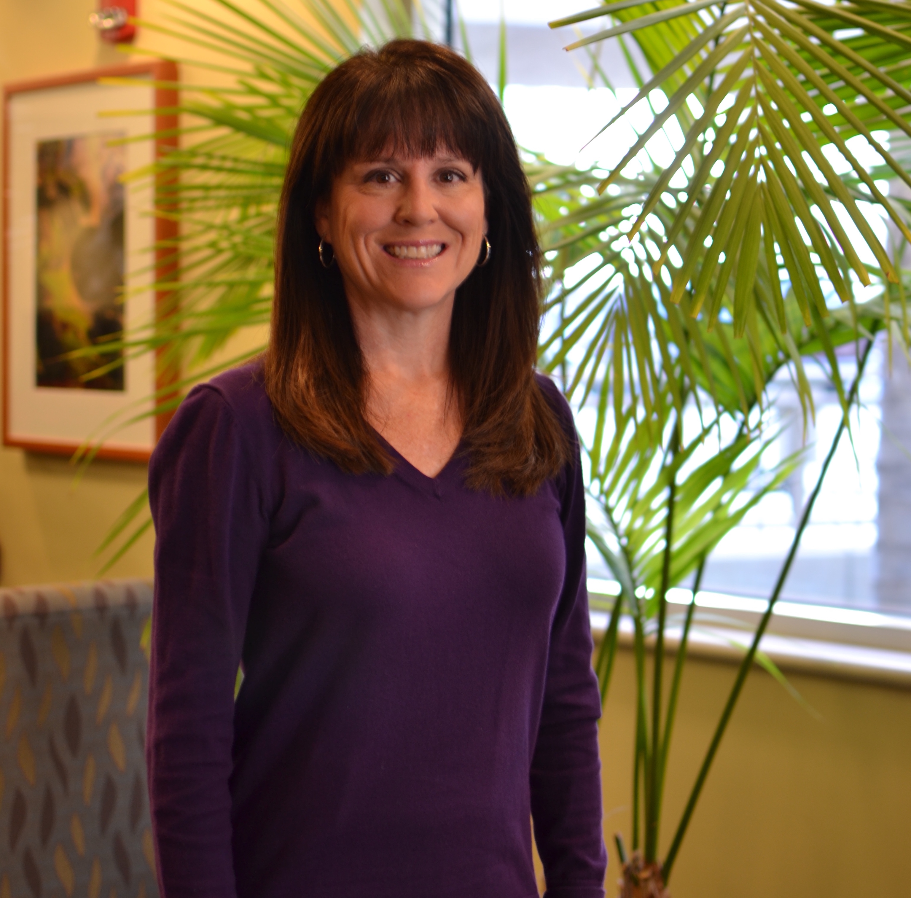

 Dr. Casteel’s Philosophy
Dr. Casteel takes pride in providing the most state-of-the-art cancer care available. She believes in the comprehensive team approach with each patient and she works collaboratively with her oncology collegues. Dr. Casteel believes that each patient is unique and she is a strong proponent of the personalized medicine concept.
“I strive to build a connection with my patients in a caring and compassionate manner. It is my job to provide current information to my patients and their families so that together we can formulate a treatment plan that best suits each situation.”
Dr. Casteel is board-certified in general surgery and the primary focus of her practice is the care of breast disease and breast cancer. She has been in practice in San Diego since 1996. Dr. Casteel led the team who opened the first nationally-accredited breast center in San Diego and has served as the director of the Breast Health Center at Sharp Memorial Hospital since 2003.
Certifications/Licenses/Professional Memberships
Diplomate of the American Board of Surgery
Licensed by the Medical Board of California
Licensed by the Missouri Board of Registration for the Healing Arts
Fellow of the American College of Surgeons
Member of the American Society of Breast Surgeons

To schedule an appointment,
please call (858) 279-5599